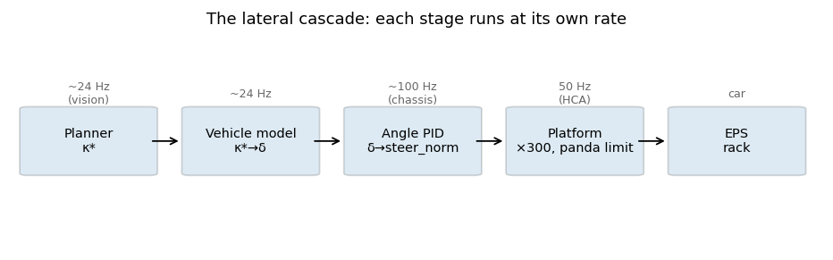

Угловой контур — там, где обратная связь и вправду заканчивается#
Все предыдущие главы выдавали желаемую траекторию: кривизну от планировщика, угол колеса от модели машины. Эта глава — про последний контур, которому предстоит заставить физическую рулевую рейку подчиниться, и рычаг у него один — тот, что даёт машина: момент ассиста, ±300 cNm, с темповым ограничителем панды. Здесь же собрались три измеренных сюрприза этого проекта: момент упирается в трение задолго до того, как в дело вступают шины; интегратор накручивается против ограничителя, которого не видит; а упреждение, которое должно было помогать, добавляет считаные cNm из 300.
Вот вся цепочка — кто чем владеет и на каком темпе работает:
{kind=link}

Рис. 33 Планировщик → модель машины → угловой PID → платформа → EPS, каждая ступень на своём темпе.#
Planner (темп зрения, ~24 Гц) κ* → модель машины → δ
Control (темп шасси, ~100 Гц) δ × steer_ratio × steer_sign + выученный ноль → уставка SWA
угловой PID (эта глава) → steer_norm ∈ [−1, 1] → × 300 cNm
Platform (темп HCA, 50 Гц) темповой ограничитель панды (+4 / −10 cNm за кадр) → HCA_01 → EPS
Код: lateral/angle_control.h (уставка, выученный ноль, слю), utils/lat_control_pid.h (сам PID),
services/control.cpp (момент = lround(steer_norm * max_torque_cnm)),
platform/volkswagen/values.h (константы панды). Момент здесь измеряется в cNm (сантиньютон-метрах,
сотых долях Н·м); потолок панды ±300 cNm — это ±3 Н·м ассиста на колонке.
Если вы не встречали PID
PID превращает ошибку (уставка минус измерение — здесь это ошибка угла руля) в команду (момент), складывая три члена: P — пропорционально текущей ошибке; I — интеграл прошлой ошибки (он съедает постоянное смещение, которое P оставляет); F — упреждение, посчитанное прямо из цели, а не из ошибки. «Антивиндап» — это правило, которое не даёт I копиться, пока выход уже в упоре и подействовать не может; именно этот механизм, глядящий не на тот предел, эта глава и измеряет.
Постройте рейку#
Объект, с которым борется этот контур, — не машина, а рейка: сухое трение плюс самоустанавливающий
момент, растущий со скоростью и углом. Выученный comma коэффициент frictionCoefficientRaw = 0.192 для
этой платформы — это около 57 cNm страгивания; игрушечная модель берёт именно это число:
import math
import numpy as np
DT = 0.01 # chassis-rate tick [s], ~100 Hz like the real inner loop
T_MAX = 300.0 # panda ceiling [cNm]
T_FRICTION = 57.0 # rack stiction [cNm] — comma's learned 0.192, in torque units
C_SAT = 0.0167 # self-aligning torque [cNm per deg per (m/s)^2]
K_RACK = 0.15 # rack speed [deg/s per net cNm]
def rack_step(swa_deg, torque_cnm, v_mps, dt=DT):
"""One tick of the toy rack: torque in, steering-wheel angle out."""
t_sat = C_SAT * v_mps * v_mps * swa_deg # the road pushing the wheel straight
net = torque_cnm - t_sat
if abs(net) <= T_FRICTION:
return swa_deg # stiction: nothing moves
return swa_deg + K_RACK * (net - math.copysign(T_FRICTION, net)) * dt
Два честных упрощения: инерции нет (рейка сильно заредуцирована) и водителя нет. И то и другое означает меньше трения — в этом и смысл затеи.
Только P: мёртвая зона трения#
Боевой пропорциональный коэффициент в единицах момента — около 180 cNm на градус ошибки угла
(pid_kp = 0.6 на нормированной шкале, где ±1 — это ±300 cNm; замерено на этом стеке: один только P
упирается в предел уже при ошибке 1.67°):
KP_T = 180.0 # cNm per degree of angle error
def drive_to(target_deg, controller, v=15.0, t_end=6.0):
"""Track a setpoint; return the trajectory of (swa, torque)."""
swa, log = 0.0, []
state = {}
for _ in range(int(t_end / DT)):
torque = controller(target_deg - swa, state)
torque = float(np.clip(torque, -T_MAX, T_MAX))
swa = rack_step(swa, torque, v)
log.append((swa, torque))
return np.array(log)
p_only = lambda err, st: KP_T * err
log = drive_to(5.0, p_only)
standing = 5.0 - log[-1, 0]
t_sat_5 = C_SAT * 15.0**2 * 5.0
predicted = (t_sat_5 + T_FRICTION) / KP_T
print(f"P only: standing error {standing:.2f}°, predicted (T_sat + friction)/kp = {predicted:.2f}°")
assert 0.25 < standing < 0.6, "P alone must stall on friction: a standing error it can never close"
P замирает ровно там, где его момента перестаёт хватать на страгивание плюс самоустановку: ошибка застывает на \((T_{\mathrm{sat}} + T_{\mathrm{fric}})/k_p\). Ниже этого порога и ошибка в 2°, и ошибка в 0.4° командуют одно и то же — ничего. Коэффициентом это не лечится: рост \(k_p\) сжимает мёртвую зону, но заодно усиливает каждый квантованный тик измеренного SWA, пришедшего по CAN.

Рис. 34 Команда P пропорциональна ошибке, но пока её момент ниже суммы трения и самоустановки, рейка не трогается с места — это мёртвая зона, которую коэффициентом не закрыть.#
I: один интегратор, два ограничения — а знает он только про одно#
Интегратор съедает смещение от трения. Но живёт он между двумя ограничениями, а боевой антивиндап
(lat_control_pid.h) видит только первое из них:
зажим выхода ±1 (±300 cNm) — интегрирование пропускается, когда пробный выход вышел бы за него;
темповой ограничитель панды — величина момента может расти лишь на 4 cNm за 20-мс кадр (200 cNm/с) и падать на 10 (500 cNm/с). PID его не замечает: его собственный выход не у зажима, пока применённый момент ещё ползёт, — и интеграл накручивается на ошибку, которую физически пока не убрать.
Соберём ограничитель и измерим это слепое пятно:
def panda_limit(applied, wanted, dt=DT):
"""MQB HCA rate limit: magnitude up 4 cNm / 20 ms, down 10 cNm / 20 ms."""
up, down = 4.0 * dt / 0.02, 10.0 * dt / 0.02
if wanted * applied < 0 or abs(wanted) < abs(applied):
step = down
else:
step = up
if wanted > applied:
return min(applied + step, wanted)
return max(applied - step, wanted)
def pi(err, st, ki_t=36.0, freeze=False):
if not freeze:
st["i"] = st.get("i", 0.0) + ki_t * err * DT
return KP_T * err + st.get("i", 0.0)
def reversal(freeze_while_limited):
"""Settle at +2°, then command −2°; return overshoot past the new target [deg]."""
swa, applied, st = 0.0, 0.0, {}
worst = 0.0
for k in range(int(10.0 / DT)):
target = 2.0 if k * DT < 4.0 else -2.0
# What the PID would output right now, clamped to the ceiling:
raw = float(np.clip(KP_T * (target - swa) + st.get("i", 0.0), -T_MAX, T_MAX))
# The rack is still crawling toward it if the applied torque is far from that (rate-limited):
rate_limited = abs(applied - raw) > 20.0
freeze = freeze_while_limited and rate_limited
wanted = float(np.clip(pi(target - swa, st, freeze=freeze), -T_MAX, T_MAX))
applied = panda_limit(applied, wanted)
swa = rack_step(swa, applied, 15.0)
if k * DT >= 4.0 and swa < -2.0:
worst = max(worst, -2.0 - swa)
return worst
over_blind = reversal(freeze_while_limited=False)
over_aware = reversal(freeze_while_limited=True)
print(f"overshoot past the new setpoint: integrator blind to the limiter {over_blind:.2f}°, "
f"frozen while rate-limited {over_aware:.2f}°")
assert over_blind > over_aware + 0.1, "winding against the rate limiter must cost visible overshoot"
Это слепое пятно не гипотеза: апстримный openpilot передаёт в тот же самый PID
freeze_integrator = steer_limited, а наш порт держит этот параметр в сигнатуре, но так его и не
передаёт, — после разворота применённый момент ползёт со скоростью 200 cNm/с, а интеграл тем временем
тихо заряжается. Ровно та же картина, что и в игрушке, измерена по дорожным бегам в
docs/LATERAL_CHAIN_RU.md.
F: упреждение, которое почти не участвует#

Рис. 35 При боевом v0 = 0 упреждение вплоть до шоссейной скорости остаётся ниже собственного трения рейки;
порог 9.8 м/с выводит его в полезный диапазон.#
Упреждение — это \(k_f \cdot \mathrm{SWA} \cdot (v^2 + v_0^2)\): момент, который из-за самоустановки понадобится даже при нулевой ошибке. Вот его боевая величина в тех единицах, которые тут важны:
KF = 6e-5 # shipped lat_pid_kf, on the normalised scale
def ff_cnm(swa_deg, v, v0=0.0):
return KF * swa_deg * (v * v + v0 * v0) * T_MAX
print(f"{'v, m/s':>7} | {'ff at SWA=5°, v0=0':>19} | {'v0=9.8':>7} | friction")
for v in (6.0, 12.0, 23.0):
print(f"{v:>7.0f} | {ff_cnm(5.0, v):>19.1f} | {ff_cnm(5.0, v, 9.8):>7.1f} | {T_FRICTION:.0f} cNm")
assert ff_cnm(5.0, 6.0) < T_FRICTION / 3, "at city speed the feedforward is buried under friction"
Держите в голове два факта сразу. Первый: ниже ~10 м/с этот член — погрешность округления на фоне 57 cNm
трения, которые ему нужно перебороть; ради этого и введён скоростной порог \(v_0\) (дефолт в коде 9.8 м/с).
Второй: в боевом конфиге lat_pid_ff_floor_mps: 0.0 — на заезде 2026-08-21 подразумеваемый \(k_f\),
восстановленный из pid_f бега, оказался 5.63e-5 против конфигурационных 6e-5 (арифметика нулевого
порога), а измеренный вклад — 1.3 / 3.2 / 4.3 cNm по скоростным корзинам, из тех же 300. Поправка в коде
есть, но в поле выключена; само измерение — в docs/CONTROLLER_LIMITS.md.
Перехват водителем: разматывать, не замораживать#
Когда водитель держит руль (steering_pressed, допуск 80 cNm на стороне панды), интегратор не
замораживается — он разматывается со скоростью 0.3/rate за тик и обнуляется примерно за три
секунды. Заморозь мы его — и в момент, когда водитель отпустит руль, контур вернул бы прежний, довходной
момент на дорогу, которая с тех пор уже изогнулась; размотка же возвращает контур, начинающий учиться
заново с нуля. Асимметрия сделана намеренно, и в игрушке её ничего не стоит увидеть: заморозьте st["i"]
на время имитированного перехвата и посмотрите на переходный процесс отпускания.
Что здесь меняет обучатель#
paramsd подаёт в этот контур три числа (setLearnedParams): жёсткость шин (она работает уровнем
выше, κ→δ), передаточное отношение и ноль угла — выученное смещение, которое добавляется к каждой
уставке (setSetpointFromSteer). На практике важнее всего ноль: переустановка телефона или уплывший
сход-развал дают постоянное смещение руля, которое иначе интегратору пришлось бы медленно съедать при
каждом новом включении. Аксессоры effective* в angle_control.h показывают, какой источник сейчас в силе.
Как это читать в беге#
Всё перечисленное выше пишется в control/lane_keep_debug на каждом тике: desired_swa_deg,
actual_swa_deg, angle_error_deg, torque_cnm и разложение pid_p / pid_i / pid_f.
torque_saturated взводится на 99 % потолка и, продержавшись секунду, превращается в экранный алерт
STEERING LIMIT. Самый полезный график для проверки на вменяемость — pid_i от времени: он должен
дышать вместе с поворотами, а не защёлкиваться.
Приёмка#
мёртвая зона P воспроизводится и сходится с \((T_{\mathrm{sat}}+T_{\mathrm{fric}})/k_p\);
опыт с разворотом даёт измеримо большее перерегулирование, когда интегратор слеп к темповому ограничителю, — и теперь вы можете одним предложением объяснить, чего не хватает боевому
freeze_integrator;таблица упреждения вместе с измеренными по бегу 1.3–4.3 cNm объясняет, почему дуги насыщаются на 300 cNm, пока
pid_fостаётся однозначным числом.
Куда дальше#
Модель машины — преобразование κ→δ, питающее этот контур, и \(G(v)\).
MPC и fp — откуда берётся уставка, и компенсация задержки выше по течению.
docs/LATERAL_CHAIN_RU.md— полный аудит цепочки, который эта глава сжимает, с дорожными числами.
Дальше: Продольное управление